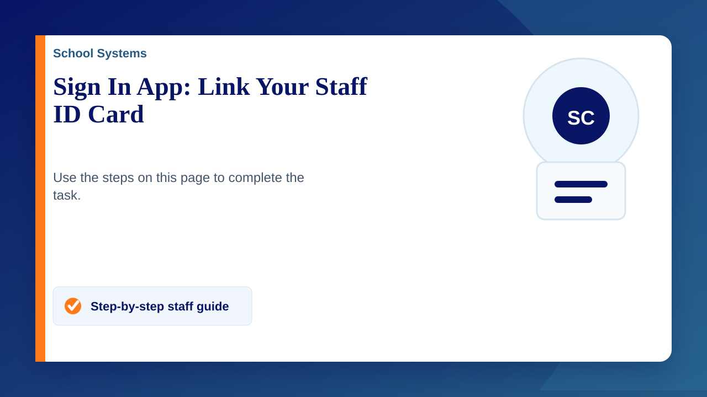

Link your staff ID card once at any school Sign In App screen. After it is connected, you can tap your card on the reader to sign in or out.
You will need: your staff ID card and access to a Sign In App screen or podium.
Link your staff ID card
- Tap the Sign In App screen to begin.
- Tap the search icon in the top-right corner and find your name.
- Tap your name, then select Connect an RFID.
- Hold your staff ID card against the RFID reader next to the tablet until the screen confirms it has connected.
Use your card afterwards
Tap your card on the reader whenever you need to sign in or out. Check that the screen confirms your status before walking away.
If it does not work
If your name is not listed, the card will not connect, or the screen shows an error, submit a support ticket. Include the location of the sign-in screen and the message shown, if there is one.